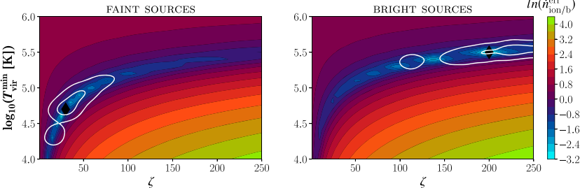
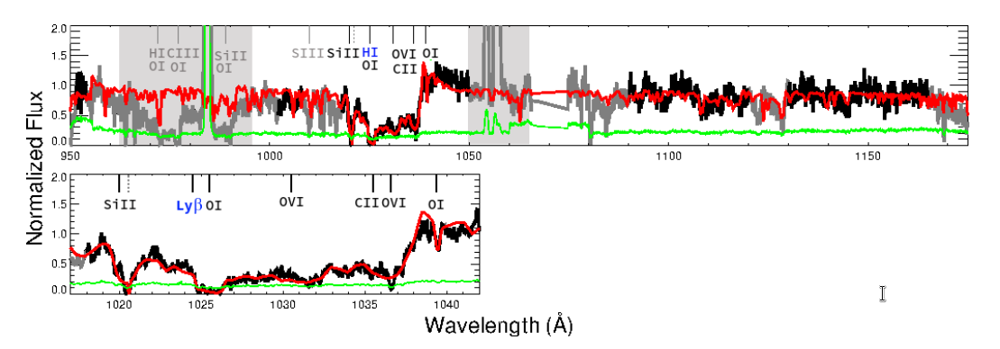

This page provides an overview of different astrophysical projects I published so far.
All the summaries below combine my own writing with some inputs from ChatGPT using some weird requests. Sometimes it is fun, sometimes it is weird, and sometimes, it reminds me that I should put more time into actually doing science.
The Epoch of Reionization
Simplified timeline of the Universe (Credit: NAOJ). The Epoch of the Reionization
corresponds to a phase transition of the Universe,
during which the neutral hydrogen was progressively ionized by the light emitted
from the first astronomical sources. In simple concepts, imagine the universe as a very big and dark room (like your uncle Tony's basement), and reionization as turning more and more light switches until the whole room is lighten up.
Ey there. Are you lost? No? Good. Lemme tell ya somethin' real special 'bout the Eeepock of Reiona...Reiona... Oh, never mind the fancy words. It's a time in the universe where things got real crazy, long after the Big Bang, ya know? Everythin' was all calm and neutral, but then, WHAM! Bam! Tagada Strawberry! Stuff got wild! These amazin' galaxies and quasars showed up and started shootin' this crazy radiation, like, whoosh! And ya won't believe it, but it turned the whole space around 'em into a big light show, like a bunch of party lights flashin' all over. Fortunately, epilepsy was not a thing at that time. But it's like the universe went, "Hey, let's have a rockin' party!".
So why is it so important? Well Donald, some people want to know what is the origin of our Universe, and there is nothing wrong about it. Exploring who was the barman, who were invited, what food and drinks were proposed, all of that helps us understand how the universe grew and changed. We study this epock to figure out how those first galaxies formed, how light and matter danced together, and how the whole universe got all charged up by these flashing lights. It's like takin' a peek through your car window and realizing the universe does not revolve around you. Or, alternatively, realizing that you just missed your exit and that the next exit is in 50 km (~30 miles if you don't speak the metric system). Anyway, it's a huge deal, and poetic people would say we gotta go on study it to unravel the mysteries of our cosmic origins. And they ain't wrong. Because, you know, the universe is like a big weird puzzle, and we're just trying to find the missing pieces.
What about the escape of ionizing photons, which is one of the main topic here?
Ah, the escape of ionizing photons. You might think that we should probably leave these guys do what they want, if they want to escape, good for them. But the truth is that you can't really understand reionization if you don't understand the escape of ionizing photons. So, for the sake of avoiding boredom, I will try to compare the escape of ionizing photons to the process of making bread (French do it the best, please don't come to me with your half cooked bread with too much sugar).
When you make break, yeast causes the dough to rise and expand. Similarly, these tricky ionizing photons strive to break free from the galaxies. They yearn to escape, much like the aroma of freshly baked bread wafting through the air, enticing all around. And most of the time they can't. Mostly because there is way too much gas and dust around, and these two fellas, they like to eat our ionizing photons. But in some galaxies, there exist some mechanisms by which these photons manage to slip out of these cosmic glutons. So studying the escape of photons becomes an adventure, like a pursuit akin to mastering the art of baking, where we explore the ingredients, the temperature, and the timing which enable these tiny particles to escape.
Personally, I study the interplay of neutral gas and dust, like key components in our bread recipe, affecting the escape route of these elusive photons. By grasping the secrets of this celestial baking process, I aim to unlock insights into the early universe's workings, just as a skilled baker reveals the secrets of their craft. If you decide to continue your lecture with the articles below, you will see how I delve into this cosmic kitchen with some companions to uncover the delicious truths hidden within. For the universe is a grand bakery, and we are but humble bakers of knowledge.
May 2023: Interpreting UV spectra from the CLASSY survey using simulations
Si II and C II spectra generated using a single simulated galaxy (in blue) accurately
replicate "real" observations of local star-forming galaxies (in black). To summarize, one could say one galaxy rules them all.
Ho ho ho! I see you decided to go ahead and read more about my research? Ambitious. But appreciated. So I will share here the joyous news of our comprehensive investigation into the Carbon II and Sillicon II spectra of 45 star-forming galaxies, carefully collected from the esteemed CLASSY candidate survey (CLASSY being the name of the survey ⊂(◉‿◉)つ). These galaxies, they are very close to us (in a cosmic perspective Kevin, you won't find them next to the pub where you go way too often). Yet, while the Universe underwent significant changes through time, these objects, they bear striking resemblance to galaxies which were formed much earlier in the Universe past. And that's an important point because it means we can use them as laboratories for exploring things we can't yet observe.
In this study, our (very) diligent efforts have unveiled a marvelous revelation: through the magic of simulation, a single virtual galaxy, created from scratch using 1s and 0s, can faithfully recreate the observed spectra of our CLASSY galaxies. Isn't it extraordinary dear colleague? It's like having ten cats, and creating one cat from scratch which somehow resemble all your cats simultaneously. The good stuff being that this not only showcases the power of simulation but also guides us towards interpreting and understanding these observations, which can be sometimes quite complicated.
There is a lot of things in this analysis (>25 pages, hold your eyes). Our quest ventures into captivating realms, exploring the impact of limited aperture size, the ever-shifting variations in time and sight-line that dance upon the spectral properties in the simulation, and the origins of the diverse and captivating features found within the Carbon and Sillicon line spectra.
With unwavering belief and power granted by me self, I declare that our work imparts invaluable wisdom for the interpretation of rest-frame UltraViolet spectra. I would even say that this knowledge will undoubtedly prove instrumental in the era of high-redshift observations, especially with the most esteemed James Webb Space Telescope and the future colossal 40m-class telescopes that await us.
So let us celebrate this bountiful discovery that will light the way to a greater understanding of the celestial wonders that surround us all. Ho ho ho out! (Mic drop)
The Word Cloud summarizing the paper most-used words.
January 2021: Inferring the properties of the sources of Reionization using the morphological pattern spectra of the ionizing regions.

Colormap representing the relative difference of the time evolution of the
average number of ionizing photons emitted per baryon as a function of the model parameters for
two reionization models. The white contours show the inferred parameters. In a few words: we got what we expected.
One more? Ah, I like your style. So let me tell you about this one. In this paper, we dive into a world of statistical inference, like a melodic journey guided by Bayesian frameworks (statistics, probabilities, how to extract some useful information from some data...). So here we look at maps of bubbles. Like you blow bubbles and look how they evolve. And the bubbles represent the ionized regions during Reionization.
We developed a formalism that's intuitive, based on the number counts and the mesmerizing morphological patterns of these bublionized regions. These statistical measures, oh, they hold immense importance in unlocking the secrets
of what is happening during Epoch of Reionization. Because we don't have observations yet, we use theoretical models for Reionization. More or less, we explore whether Reionization is driven by huge, very loud and annoying fireworks, or if it is driven by smaller, cutter firecrackers (can you sense a personal preference? No? Good, it means my science is impartial). And, through the enchanting lens of our original and intuitive formalism, we're able to glean precious insights into the astrophysics of these models, like singing different melodies through the cosmos and being able to tell which one will never gonna give you up.
And that's not all my beautiful turkeys from UK (may you survive Thanksgiving), we also take a moment to envision the future, the potential impact of this novel inferential approach on upcoming observations
with cutting-edge interferometers, like the Square Kilometer Array. It's like we are harmonizing power spectrum and tomographic analyses in a fantastic symphony which could make us the Beethoven of our time. Or, as my 2 years old nephew would say, a symphony of knowledge that leads us to robust scientific results and propels our understanding of the mesmerizing reionization process.
The Word Cloud summarizing the paper most-used words.
July 2020: The origin of the escape of Lyman α and ionizing photons in Lyman continuum emitters
Schematic representing the leakage mechanisms of ionizing photons in local star-forming galaxies. Have you ever spent more than two days to make a sketch? No? Your time is probably better spent than mine then.
Hark, good people! In this parchment, we embark on the most noble quest, a quest to unravel the intricate ties that bind the neutral gas properties, the wondrous Lyman-α properties, and the elusive escape of ionizing photons within a collection of 22 star-forming galaxies. Our endeavor delves deep into the realms of Reionization, for we seek to understand the origin of the ionizing photon leakage in galaxies that are friendly enough to allow it. We investigate betwixt the spatial distribution and the spirited motion of this neutral gas (holy molly), and how it shapes both the Lyman-α properties and the escape of these enchanting ionizing photons.
Lo and behold, we have uncovered a remarkable revelation (aaaaaaaa said someone with a holy voice)! It is the porosity of this neutral gas that holds great importance. Yes, most interestingly, it seems that the fact that the gas in these galaxies look like the 4-years-old sponge that awaits its end above your sink, is what triggers the blessed leakage of these ionizing photons. Good news (not for your sponge, but for reionization science), the gas porosity is something we can measure and use to ascertain a lower threshold, a bound, to the escape fraction of these LyC photons in the galaxies of yore. Let us revel in this newfound knowledge, for it unveils a glimpse into the mysteries that shroud the high-z galaxies of old.
The Word Cloud summarizing the paper most-used words.
August 2018: Neutral gas properties of Lyman continuum emitting galaxies:
Column densities and covering fractions from
UV absorption lines

A stellar + absorption line fit in one galaxy of this study. We want the red line (the model) to be as close as possible as the black line (the data). So we are quite good here.
Ahhhhhh, this particular paper holds a very specific place in my mental palace. You know why? It was my first astrophysical paper. And I was so young and so excited about the world. Then I went deeper into Academia and I saw some things that.... The paper? Ah yes, behold, my good fellows! Let us embark upon a whimsical tale, likening it to taking care of your most valued plants (did you know courgettes have to be pollinated? I didn't). Forsooth, in this cool paper, we delve into the realm of star-forming galaxies, where the Lyman series (bunch of absorption lines that are there because hydrogen atoms like to keep all the light for themselves) unveils secrets of their verdant gas, akin to nourishment for a thriving bloom, and compare it to the metallic essence that graces them.
When I came to Geneva (R.I.P Renault Clio), we tried to unravel the enigma of how those elusive ionizing photons make their escape, as if delicate petals carried by the wind. 'Tis the inaugural time we investigated how the neutral hydrogen (H I) properties impact these celestial blossoms. To do that, we used synthetic spectra, like alchemical concoctions, to reveal the presence and shrouding of H I upon their ethereal forms. Like detectives, we explored the intricate dance betwixt H I and Sillicon II covers, solving the riddles that entwine them. And hark, the enchantment deepens! We witnessed the influence of dust, like a veil upon a blossom, upon the escape of those elusive photons. To ensure our path is true, we compared our findings to the discoveries of others, as guiding stars in our celestial garden.
These discoveries, my dear companions, bear immense import, as they illuminate the inner workings of the primordial universe, where galaxies take root and bloom, transforming through the eons. 'Tis akin to piecing together a cosmic puzzle, a marvel to behold, we hold.
The Word Cloud summarizing the paper most-used words.
You can also have a look at the companion paper which talks more in details about predicting the escape of ionizing photons.